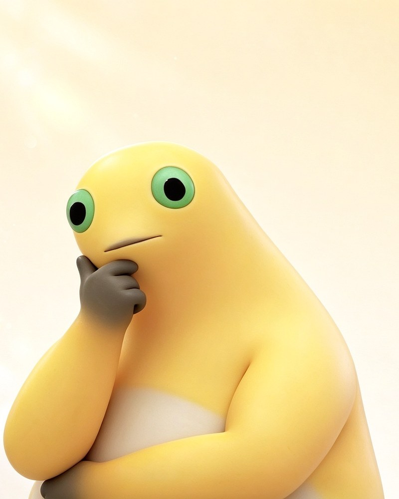

Field notes · No. 001
The internet's most doubtful frog.
Milk Frog is a small yellow character with big green eyes, a milk bottle, and the expression of someone who has just been asked a difficult question. This guide takes it seriously. Just enough.

Contents
Three chapters, one frog.
Read it in order, or wander. The frog is not going anywhere.
-
01
Origin
A fan-made character, a bottle, and a look that travelled faster than any explanation.
Read the chapter -
02
The meme
Three ways the internet uses the stare, the pause, and the polite refusal.
Open the gallery -
03
Predictions
Four questions, three possible frogs, zero data collection.
Take the test
Why this exists
A guide, not a wiki.
There is no official manual for a meme. So this site does the next best thing: it looks closely, writes down what it sees, and credits what it borrows.
Everything here is fan documentation — affectionate, unfinished, and open to correction. No accounts, no comments, no cart. Nothing to sign up for.
- Specimen
- Milk Frog
- Habitat
- Group chats, comment sections, late-night feeds
- Diet
- Milk, attention, the occasional awkward silence
- Call
- A long, thoughtful pause
- Status
- Thriving, unfortunately
It does not answer the question. It considers it.
The milk test